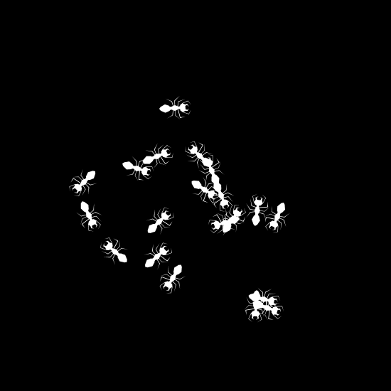
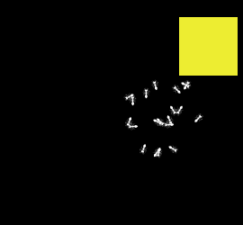
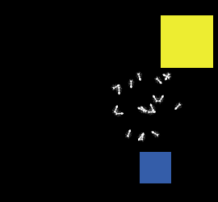
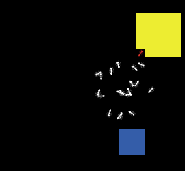
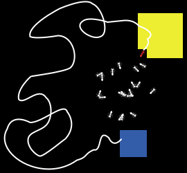
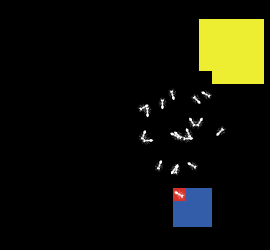

Fourmis en Netlogo Laboratoire IV
Hector Satizabal
Julien Rebetez
I. Critères d'évaluation
Une fois le laboratoire terminé, envoyez le fichier .nlogo par email à jeremie.despraz@heig-vd.ch (pas de fichier texte ou de document word !).
Objectifs:
- Pas d'erreur de syntaxe et indentation correcte
- Une procédure pour initialiser l'environnement (carrés + fourmis)
- La procédure pour dessiner les carrés doit accepter deux paramètres : taille et couleur du carré
- Utilisation d'une boucle while pour la boucle principale
- Utilisation d'une variable globale pour compter la quantité de nourriture dans le nid
- Utilisation d'une variable d'état pour mémoriser qu'une fourmi est chargée
- Déplacement aléatoire (pas de sauts, pas de cercles, utiliser fd 1)
- Utilisation de bouton(s) pour initialiser l'environnement et lancer la simulation
- Respectez les indications ci-dessous
II. Exercice
- Créer une population de 20 fourmis

- Nourriture: Écrire une procédure pour qu'une des fourmis dessine un carré jaune de 5x5 patches à un endroit aléatoire de l'environnement

- Nid: Écrire une procédure pour qu'une des fourmis dessine un carré bleu de 3x3 patches à un endroit aléatoire de l'environnement

- Écrire un programme qui fait bouger aléatoirement une vingtaine de fourmis à la recherche de nourriture (patches jaunes):
- Lorsqu'une fourmi trouve de la nourriture, elle changera la couleur du patch en noir pour indiquer qu'elle l'a pris
- Si la fourmi porte de la nourriture, elle changera son état à "chargée", et elle changera sa couleur en rouge pour montrer son état

- Une fourmi qui porte de la nourriture ne peut pas porter un deuxième patch, elle devra "chercher" le nid pour y déposer son patch de nourriture

- Lorsqu'un patch jaune est empilé dans le nid, on changera la couleur du patch du nid correspondant (incrémentation de la couleur par pas de 0.1)

- Dès que tous les patches jaunes sont dans le nid, la simulation s'arrête
HEIG-VD, 2016